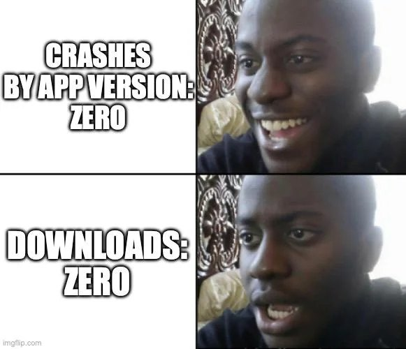
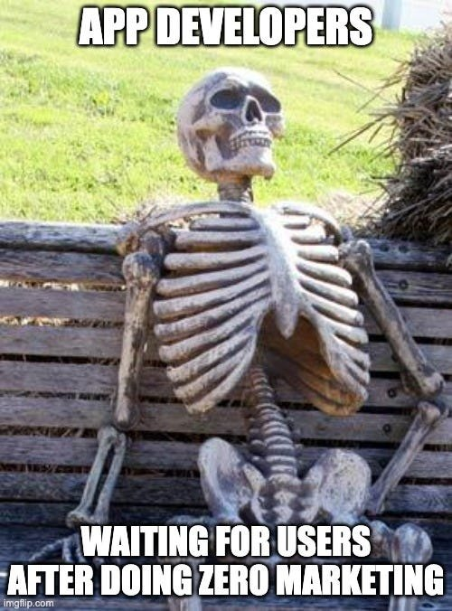
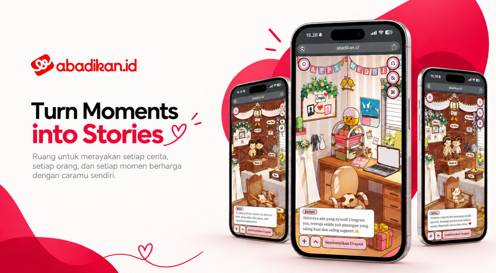
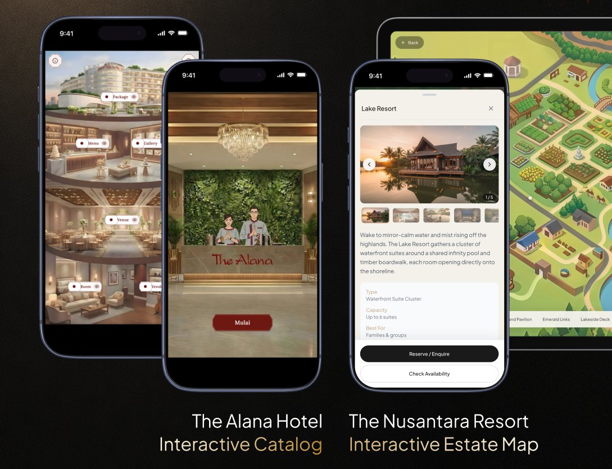
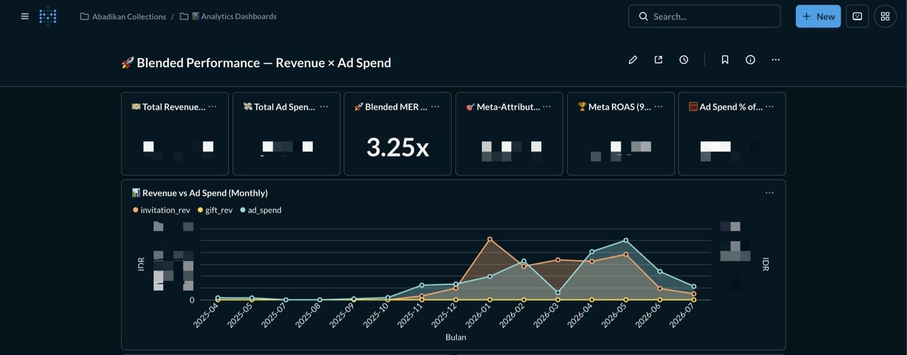
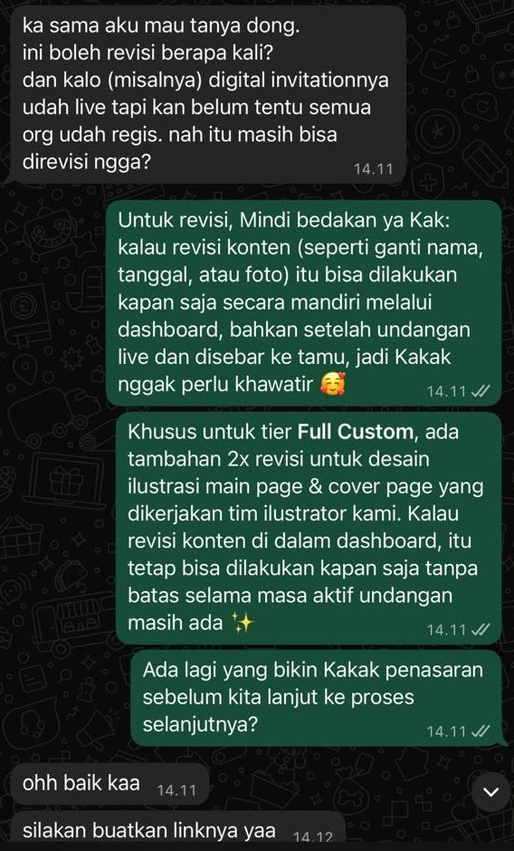
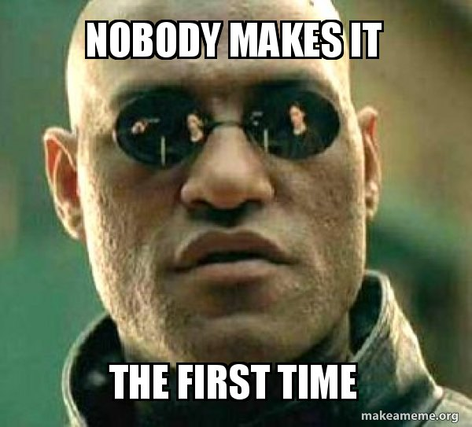

The hardest bug isn’t always in your code.
Mobile, web, payments, partners, analytics. We never stopped to check who was waiting for it.
Tickets, wallet, discovery.
Partner platform and dashboards.
Building ≠ selling.

A working product is not proof of demand.
Put a rough version in front of real buyers, then let them tell us what to build.


At WIGO, we pushed the product into the market.
At Abadikan, the market pulled the product out of us.
Test willingness to pay before building more.
Look for pain that repeats across customers.
Only build the next step the evidence supports.
When the market starts pulling, the signals pile up: chats, orders, leads, dashboards. The loop slows down at “listen.”


The goal isn’t to put AI everywhere. The goal is to find where the business is slow.
Don’t only ask “Can I build this?”
Ask who needs it enough to use it, pay for it, and ask for more.

Ask me about WIGO, finding demand for Abadikan, or where AI actually helps a small business.